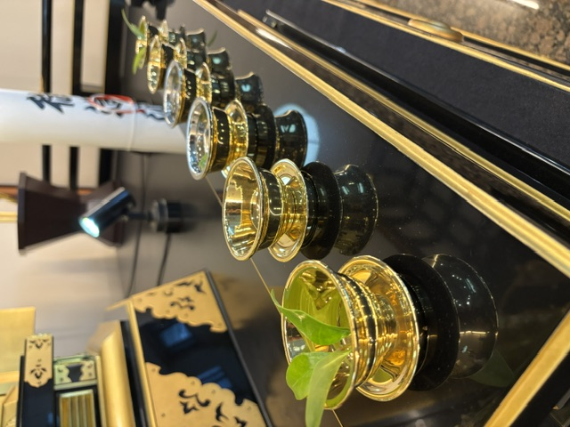

行事を、寺院を知るきっかけに。
年間行事や毎月の定例行事を確認し、参詣のきっかけとしてご活用ください。予定は変更になる場合があります。
年間行事
妙本寺の行事予定をご案内します。2026年（令和8年）の行事に加え、2027年（令和9年）の検討資料も確認できます。
行事への参加を考えている方へ
妙本寺は神戸市灘区原田通3丁目1-1にあります。JR灘駅北口・阪急王子公園駅から徒歩約5分です。初めての方も、来寺前に次の案内をご確認ください。
2026年10月（令和8年）の行事予定
資料について：10月24日・25日の御会式は、ご提供の「法華講便り 令和8年10月号」に日付・時刻が明記されています。それ以外の定例行事は従来の年間・定例案内に基づく目安であり、個別の開催確認はしていません。事前に寺院へご確認ください。
| 日付 | 行事 | 時刻・資料 |
|---|---|---|
| 10月1日（木） | 永代経（旧・お経日） | 午後1時／定例予定の目安 |
| 10月4日（日） | 広布唱題会 | 午前9時／定例予定の目安 |
| 10月10日（土） | 寺院清掃・御逮夜御講 | 午後1時30分・午後6時／定例予定の目安 |
| 10月11日（日） | 青年部・少年部合同部会／御報恩御講 | 午前11時30分・午後1時／定例予定の目安 |
| 10月24日（土） | 御会式・御逮夜 | 午後2時から／令和8年10月号記載 |
| 10月25日（日） | 御会式・御正当会 | 午後2時から／令和8年10月号記載 |
「お経日」から「永代経」への名称変更は、令和8年1月号のご案内に基づきます。行事の詳細・参加方法はお寺へお問い合わせください。
令和9年度（2027年）年間行事予定
来年の行事について、ご提供いただいた年間予定表を読みやすく整理しました。
紙面右上に「検討資料」と記載があります。印刷されている日程も、赤字で修正された日程も、正式な開催案内ではありません。参詣・申込み前には必ず妙本寺にご確認ください。
| 日程（2027年） | 行事 | 時刻 | 確認事項 |
|---|---|---|---|
| 1月1日（金・祝） | 元朝勤行 | 午前0時 | 検討資料 |
| 1月1日（金・祝） | 新年広布唱題会 | 午前9時 | 検討資料 |
| 1月1日（金・祝） | 元旦勤行 | 午前11時・午後1時 | 午前11時の実施は要検討 |
| 1月2日（土） | 元旦勤行 | 午後1時 | 検討資料 |
| 2月3日（水） | 節分会 | 午後6時 | 検討資料 |
| 2月7日（日） | 興師会 | 午後1時 | 検討資料 |
| 2月16日（火） | 宗祖御誕生会 | 午後1時 | 検討資料 |
| 3月6日（土） | 日布上人祥月命日忌法要 | 午後1時 | 要検討 |
| 3月20日（土） | 春季彼岸会 | 午後1時 | 検討資料 |
| 3月21日（日） | 春季彼岸会 | 午後1時 | 午前10時の法要なし（資料注記） |
| 4月28日（水） | 宗旨建立会 | 午後1時 | 検討資料 |
| 5月4日（火・祝）※赤字修正案 | 妙本寺重宝虫払法要 | 午前10時30分 ※手書き案 | 要確認：印刷原案は5月5日（水・祝）午後1時。日付・開始時刻に手書き修正あり |
| 8月13日（金） | 盂蘭盆会 | 午後1時 | 検討資料 |
| 8月15日（日） | 盂蘭盆会 | 午後1時 | 午前10時の法要なし（資料注記） |
| 9月12日（日） | 竜口法難会（兼御報恩御講） | 午後1時 | 検討資料 |
| 9月20日（月・祝） | 秋季彼岸会 | 午後1時 | 要検討 |
| 9月23日（木・祝） | 秋季彼岸会 | 午後1時 | 午前10時の法要なし（資料注記） |
| 日時未定 | 御会式・御逮夜 | 未定 | 原稿は日付・開始時刻とも未定 |
| 日時未定 | 御会式・御正当会 | 未定 | 原稿は日付・開始時刻とも未定 |
| 11月14日（日）※赤字修正案 | 目師会 | 午後1時 | 要検討：印刷原案は11月15日（月）。赤字で14日（日）に修正 |
令和9年度資料に記載された定例行事
以下も検討資料の記載です。行事や曜日は、法要・行事によって変更される場合があります。
| 行事 | 日程 | 時間 |
|---|---|---|
| 勤行 | 毎日 | 朝 午前7時／夕 午後6時 |
| 広布唱題会 | 毎月 第1日曜日 | 午前9時 |
| 唱題行 | 毎週 土曜日 | 午前11時 |
| 唱題行 | 毎週 日曜日（第1日曜を除く） | 午前9時30分 |
| 永代経（月はじめ先祖供養） | 毎月1日 | 午後1時 |
| 日蓮大聖人御報恩御講 | 毎月 第2日曜日 | 午後1時 |
| 御逮夜御講 | 御講の前日（土曜日） | 午後6時 |
御授戒・来寺法事は、紙面で「電話もしくは受付にて確認の上来寺」と案内されています。開始時刻や受付方法は寺院にお問い合わせください。
5月の重宝虫払法要は「5月4日・午前10時30分」と読める赤字修正がありますが、紙面は「要検討」です。11月の目師会も「11月14日（日）」と赤字修正され、「要検討」となっています。御会式の両日程は未定です。また、余白の地方部総会などのメモは正式な日時を確認できないため、年間表の開催確定項目には加えていません。
定例の予定
| 行事 | 日程 | 時間 |
|---|---|---|
| 永代経（旧・お経日） | 原則 毎月1日 | 午後1時 |
| 広布唱題会 | 原則 第1日曜日 | 午前9時 |
| 唱題行 | 土曜日 | 午前11時 |
| 唱題行 | 日曜日 | 午前9時30分 |
| 寺院清掃 | 原則 第2土曜日 | 午後1時30分 |
| 御逮夜御講 | 原則 第2土曜日 | 午後6時 |
| 御報恩御講 | 原則 第2日曜日 | 午後1時 |
| 青年部・少年部合同部会 | 毎月 御講日 | 午前11時30分（御講前） |
※7月の唱題行は、カレンダー記載では月曜〜土曜 午前11時、第1日曜は広布唱題会 午前9時、その他の日曜は午前9時30分です。
2026年 主な行事
| 日程 | 行事 | 時間・場所 |
|---|---|---|
| 1月1日 | 元朝勤行 | 午前0時 |
| 1月1日 | 広布唱題会 | 午前9時 |
| 1月1日 | 元旦勤行 | 午前11時・午後1時 |
| 1月2日 | 元旦勤行 | 午後1時 |
| 1月2日〜3日 | 法華講新年初登山 | 総本山 |
| 2月3日 | 節分会 | 午後6時 |
| 2月16日 | 宗祖御誕生会 | 午後1時 |
| 3月15日 | 春季総登山・法華講連合会総会 | — |
| 3月20日 | 春季彼岸会 | 午前10時・午後1時 |
| 3月21日 | 春季彼岸会 | 午後1時 |
| 4月29日 | 宗旨建立会 | 午後1時 |
| 5月6日 | 妙本寺重宝虫払法要 | 午後1時 |
| 5月6日〜7日 | 御霊宝虫払大法会 | 総本山 |
| 5月29日 | 兵庫地方部総会 | 於 法法恩寺 |
| 8月13日 | 盂蘭盆会 | 午後1時 |
| 8月15日 | 盂蘭盆会 | 午前10時・午後1時 |
| 9月18日〜19日 | 寛師会 | 総本山 |
| 9月22日 | 秋季彼岸会 | 午後1時 |
| 9月23日 | 秋季彼岸会 | 午前10時・午後1時 |
| 10月24日 | 御会式・御逮夜 | 午後2時から（令和8年10月号記載） |
| 10月25日 | 御会式・御正当会 | 午後2時から（令和8年10月号記載） |
| 11月15日 | 日師会 | 午後1時 |
| 11月20日〜21日 | 御大会 | 総本山 |
| 11月28日 | 支部総登山 | — |
このページを家族や身近な方へ
必要としている方へ、このページのURLを共有できます。